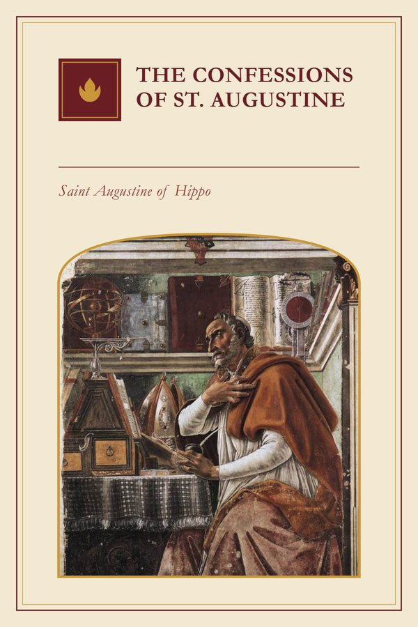

The Confessions of St. Augustine
Which one? The PDF opens on any phone or computer. The EPUB is for reading apps (Google Play Books, Apple Books, Kindle or Kobo) and lets you enlarge the text.
Why read it
For anyone who has felt far from God, or has gone round in circles looking for something without knowing what. Augustine speaks not from perfection but from his mistakes, and that is why he is believed. It reads like an intimate conversation, and leaves the sense that the restlessness of one's own heart has a meaning.
Summary
The story of a conversion told as a prayer: Augustine reviews before God his childhood, his disordered youth, his intellectual search and his encounter with grace in Milan, and ends by meditating on memory, time and creation. English translation by E. B. Pusey.
Quotes
Thou madest us for Thyself, and our heart is restless, until it repose in Thee.
Too late loved I Thee, O Thou Beauty of ancient days, yet ever new! too late I loved Thee!
Moral rating
6 of 6: No drawbacks. See on delibris.org
Similar books
- The Imitation of Christ · Thomas à Kempis
- Orthodoxy · G. K. Chesterton
- The Practice of the Presence of God · Brother Lawrence of the Resurrection, O.C.D.